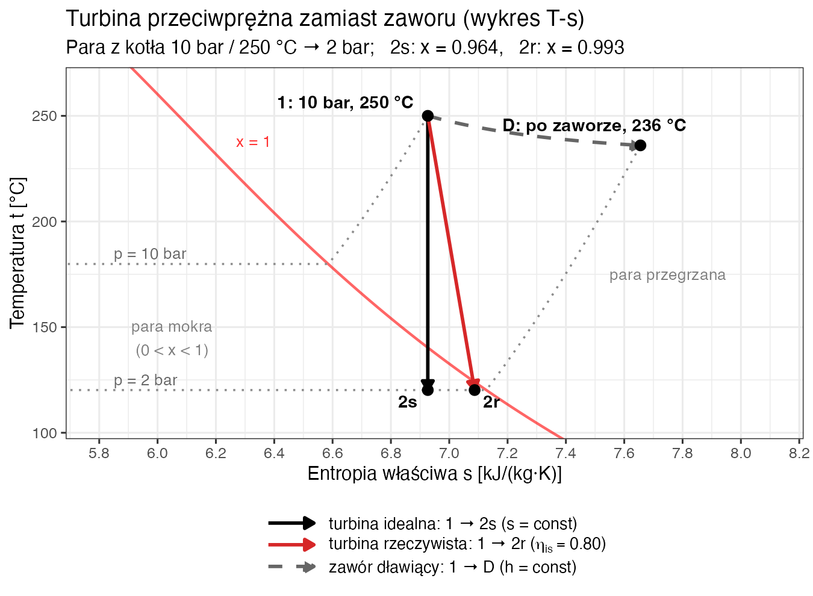

Ćwiczenie 4: Kogeneracja – Turbina Parowa
Projekt Termo-Tech – Etap 4: Turbina Przeciwprężna Zamiast Zaworu Dławiącego
prof. UPP dr hab. inż. Marek Urbaniak
Wydział Inżynierii Środowiska i Inżynierii Mechanicznej


Projekt: Etap 4 – Mikroturbina
W Ćw. 3 (Zad. 3.4) redukowaliśmy ciśnienie pary z 10 bar do 2 bar na zaworze dławiącym. Energia się nie traci (\(h = \text{const}\)), ale tracimy egzergię – zdolność pary do wykonania pracy! W miejscu zaworu proponujemy zainstalować turbinę przeciwprężną: para najpierw wytworzy prąd, a potem (o niższym ciśnieniu) trafi do wymiennika. To kogeneracja (CHP – Combined Heat and Power).
Dane (przykład z Ćw. 3):
- Wlot = para z kotła: \(p_1 = 10\ \text{bar}\), \(t_1 = 250\ \text{°C}\)
- Wylot = ciśnienie po dławieniu: \(p_2 = 2\ \text{bar}\)
- Strumień = cała wydajność kotła: \(\dot{m} = 2\ \text{t/h} = \frac{2 \cdot 1000}{3600} \approx 0.5556\ \text{kg/s}\)
- Sprawność izentropowa: \(\eta_{\text{is}} = 0.80\)
Twoje zadanie (jak w karcie projektowej)
- 4.1 – stan pary za turbiną idealną (\(s = \text{const}\)): porównanie \(s_1\) z \(s'\) i \(s''\)
- 4.2 – stopień suchości pary na wylocie \(x_2\)
- 4.3 – idealna moc turbiny \(N_t\)
- 4.4 – rzeczywista moc turbiny \(N_r\) (sprawność izentropowa \(\eta_{\text{is}}\))
- 4.5 – wariant „Modernizacja Plus”: para z kotła o \(4\ \text{bar}\) i \(50\ \text{K}\) „wyżej”
- 4.6 – sprawność Carnota \(\eta_C\) i sprawność \(\eta_t = N_t / \dot{Q}_{\text{kotła}}\)
Na Twojej karcie
- \(p_1\), \(t_1\) – ciśnienie i temperatura pary z kotła (Etap 3); \(p_2\) – ciśnienie po dławieniu (Zad. 3.4); \(\dot{m}\) – wydajność kotła (cała para idzie przez turbinę); \(\eta_{\text{is}}\) – z tabeli parametrów.
- Para przegrzana: Załącznik B (ciśnienia w MPa: \(10\ \text{bar} = 1.0\ \text{MPa}\)). Stan nasycenia na wylocie: Załącznik A (wiersz \(p_2\); kolumna \(r = h'' - h'\)).
Wizualizacja procesu (wykres T-s)

- 1 → 2s – turbina idealna: pionowa linia w dół (izentropa, \(s = \text{const}\)).
- 1 → 2r – turbina rzeczywista: tarcie i zawirowania zwiększają entropię, więc punkt 2r leży na prawo od 2s.
- 1 → D – dawny zawór dławiący (\(h = \text{const}\)): ten sam spadek ciśnienia, ale zero pracy.
Para przegrzana (punkt 1) opuszcza turbinę jako lekko mokra (2s, 2r). Przy niskiej sprawności \(\eta_{\text{is}}\) może wyjść nawet przegrzana (\(h_{2r} > h''\)).
Zadanie 4.1: Rozprężanie izentropowe (\(s = \text{const}\))
Proces w idealnej turbinie jest adiabatyczny i odwracalny (\(s_1 = s_2\)).
Krok 1: Parametry na wlocie (10 bar, 250 °C)
Tablica B2, kolumna 1,0 MPa, wiersz 250 °C:
- \(h_1 = 2943\ \text{kJ/kg}\) (ta sama wartość co \(h_2\) w Zad. 3.2 – to ta sama para z kotła)
- \(s_1 = 6.926\ \text{kJ/(kg·K)}\)
Krok 2: Parametry na wylocie (2 bar, \(s_2 = s_1\))
Załącznik A, wiersz 2 bar – porównujemy \(s_2 = 6.926\ \text{kJ/(kg·K)}\) z:
- \(s' = 1.530\ \text{kJ/(kg·K)}\) (ciecz nasycona)
- \(s'' = 7.127\ \text{kJ/(kg·K)}\) (para sucha nasycona)
Wniosek
Ponieważ \(s' < s_2 < s''\) (\(1.530 < 6.926 < 7.127\)), para na wylocie jest parą mokrą (mieszaniną cieczy i pary, \(0 < x_2 < 1\)).
Zadanie 4.2: Stopień suchości (\(x_2\))
Jaka część pary skropliła się w turbinie?
\[ s_2 = s' + x_2 (s'' - s') \] \[ x_2 = \frac{s_2 - s'}{s'' - s'} \]
Obliczenia: \[ x_2 = \frac{6.926 - 1.530}{7.127 - 1.530} \] \[ x_2 = \frac{5.396}{5.597} \approx \mathbf{0.964} \]
Interpretacja: 96.4% masy to para (sucha nasycona), a 3.6% to kropelki wody. To bezpieczny poziom wilgotności dla turbiny (zwykle wymaga się \(x \geq 0.85\text{–}0.90\)).
Zadanie 4.3: Idealna moc turbiny
Entalpia na wylocie (\(h_{2s}\)) dla procesu izentropowego: \[ h_{2s} = h' + x_2 (h'' - h') \]
Załącznik A, wiersz 2 bar: \(h' = 504.7\ \text{kJ/kg}\), \(h'' = 2707\ \text{kJ/kg}\), \(h'' - h' = r \approx 2202\ \text{kJ/kg}\).
\[ h_{2s} = 504.7 + 0.964 \cdot 2202 \] \[ h_{2s} \approx 504.7 + 2122.7 = \mathbf{2627.4\ \text{kJ/kg}} \]
Moc idealna (\(N_t\)): \[ N_t = \dot{m} \cdot (h_1 - h_{2s}) \] \[ N_t = 0.5556\ \text{kg/s} \cdot (2943 - 2627.4)\ \text{kJ/kg} \] \[ N_t = 0.5556 \cdot 315.6 \approx \mathbf{175.3\ \text{kW}} \]
Zadanie 4.4: Rzeczywista moc (sprawność izentropowa)
Rzeczywista turbina nie jest idealna. Producent deklaruje sprawność izentropową \(\eta_{\text{is}} = 0.80\).
Jaka jest rzeczywista entalpia na wylocie (\(h_{2r}\))?
\[ \eta_{\text{is}} = \frac{h_1 - h_{2r}}{h_1 - h_{2s}} \]
\[ h_{2r} = h_1 - \eta_{\text{is}} \cdot (h_1 - h_{2s}) \]
\[ h_{2r} = 2943 - 0.80 \cdot (2943 - 2627.4) = \newline 2943 - 252.5 \]
\[ h_{2r} \approx \mathbf{2690.5\ \text{kJ/kg}} \]
Rzeczywista moc: \[ N_r = \dot{m} \cdot (h_1 - h_{2r}) = \newline 0.5556 \cdot 252.5 \approx \mathbf{140.3\ \text{kW}} \]
(Zamiast \(175.3\ \text{kW}\) w idealnym przypadku – strata \(35.0\ \text{kW}\)).
Stan pary na wylocie
Czy \(h_{2r} = 2690.5\ \text{kJ/kg}\) to nadal para mokra? \(h''(2\ \text{bar}) = 2707 > 2690.5\) → tak, ale \(x_{2r} = \frac{2690.5 - 504.7}{2202} \approx 0.993\) – praktycznie sucha. Gdyby \(h_{2r} > h''\), para na wylocie byłaby przegrzana (stopień suchości \(x\) nie istnieje).
Zadanie 4.5: Analiza wariantowa – wyższe parametry pary
Co jeśli kocioł dostarczy parę o 4 bar i 50 K „wyżej”: \(14\ \text{bar}\), \(300\ \text{°C}\) zamiast \(10\ \text{bar}\), \(250\ \text{°C}\)? Wylot nadal \(2\ \text{bar}\). (Na karcie: Twoje \(p_1 + 4\ \text{bar}\) i \(t_1 + 50\ \text{K}\); dla ciśnień 16–20 bar – Tablica B3.)
Tablica B2, kolumna 1,4 MPa, wiersz 300 °C
\(h_1 = 3041\ \text{kJ/kg}\), \(s_1 = 6.955\ \text{kJ/(kg·K)}\)
Krok 1: Sprawdzamy stan na wylocie (\(s_2 = 6.955\ \text{kJ/(kg·K)}\), \(p_2 = 2\ \text{bar}\)): \(s''(2\ \text{bar}) = 7.127\) → \(s_2 < s''\) → para mokra.
\[ x_{2s} = \frac{6.955 - 1.530}{7.127 - 1.530} = \frac{5.425}{5.597} \approx 0.969 \]
\[ h_{2s} = 504.7 + 0.969 \cdot 2202 = 504.7 + 2133.7 \approx 2638.4\ \text{kJ/kg} \]
Moc idealna: \[ N_{t,\text{var}} = 0.5556 \cdot (3041 - 2638.4) = 0.5556 \cdot 402.6 \approx \mathbf{223.7\ \text{kW}} \] \[ \Delta = \frac{N_{t,\text{var}} - N_t}{N_t} \cdot 100 = \frac{223.7 - 175.3}{175.3} \cdot 100 \approx \mathbf{27.6\%} \]
Podniesienie parametrów pary z (10 bar, 250 °C) na (14 bar, 300 °C) zwiększyło moc idealną o 27.6% (175.3 → 223.7 kW)!
Zadanie 4.6: Sprawność obiegu Carnota
Jaka byłaby maksymalna teoretyczna sprawność silnika cieplnego pracującego między temperaturą pary wlotowej a temperaturą otoczenia?
\(T_H = t_1 + 273.15\); \(T_L\) – temperatura otoczenia (hali): przyjmujemy \(20\ \text{°C}\), czyli \(T_L = 293.15\ \text{K}\). (Na karcie: Twoja temperatura w hali \(t\) z Etapu 1.)
Wariant podstawowy (\(t_1 = 250\ \text{°C}\)): \[ \eta_C = 1 - \frac{T_L}{T_H} \] \[ \eta_C = 1 - \frac{293.15}{523.15} \approx \mathbf{43.96\%} \]
Wariant z Zad. 4.5 (\(t_1 = 300\ \text{°C}\)): \[ \eta_C = 1 - \frac{293.15}{573.15} \approx \mathbf{48.85\%} \]
Zadanie 4.6 (cd.): Sprawność \(\eta_t\) a Carnot
Porównujemy idealną moc turbiny (Zad. 4.3) z mocą cieplną kotła (Zad. 3.2): \[ \eta_t = \frac{N_t}{\dot{Q}_{\text{kotła}}} \cdot 100 = \frac{175.3}{1495} \cdot 100 \approx \mathbf{11.7\%} \]
Dlaczego tak daleko od Carnota?
Daleko od Carnota (\(43.96\%\))! Turbina jest przeciwprężna – nie rozpręża pary do temperatury otoczenia, lecz oddaje ją do wymiennika przy \(t_s(2\ \text{bar}) = 120.2\ \text{°C}\). Dla takiej maszyny realną granicą jest Carnot z \(T_L = 393.35\ \text{K}\): \(\eta_C = 1 - \frac{393.35}{523.15} \approx 24.8\%\).
Kogeneracja: ciepło nie jest stracone
To nie jest strata! Z pozostałych ≈ 88% mocy kotła większość trafia do wymiennika (Zad. 3.8) jako ciepło użytkowe. W kogeneracji ocenia się więc wskaźnik wykorzystania energii \((N + \dot{Q}_{\text{wym}}) / \dot{Q}_{\text{kotła}}\), a nie samą sprawność wytwarzania prądu.
Zadanie domowe (Raport 4)
Temat: Opłacalność kogeneracji.
Zainstalowanie turbiny kosztuje 150 000 PLN. Generator ma sprawność \(\eta_{\text{gen}} = 90\%\). Cena prądu dla przemysłu: 0.80 PLN/kWh. Turbina pracuje 4000 h/rok.
- Oblicz moc elektryczną: \(N_{\text{el}} = N_r \cdot \eta_{\text{gen}}\) (\(N_r\) – rzeczywista moc turbiny z Zad. 4.4).
- Oblicz roczną produkcję energii elektrycznej [MWh].
- Oblicz roczny zysk ze sprzedaży (lub niekupionego) prądu [PLN].
- Oblicz prosty okres zwrotu nakładów (SPBT, Simple Pay-Back Time).
Pytanie do raportu
Czy opłaca się montować turbinę? Porównaj z dławieniem pary na zaworze (0 PLN z produkcji prądu).
Uwaga – bilans energii
Turbina zamienia część entalpii pary na pracę, więc do wymiennika trafia mniej ciepła: \(0.5556 \cdot (2690.5 - 504.7) \approx 1214\ \text{kW}\) zamiast \(\approx 1355\ \text{kW}\) (Zad. 3.8) – o \(\approx N_r = 140\ \text{kW}\) mniej. Aby utrzymać ciepło dla procesu, kocioł musi spalić więcej gazu (metodą z Zad. 3.3: \(\approx 16\ \text{m}^3\text{/h}\)). Uwzględnij ten koszt w ocenie opłacalności.
Termodynamika Techniczna – Ćwiczenia (Ć4)